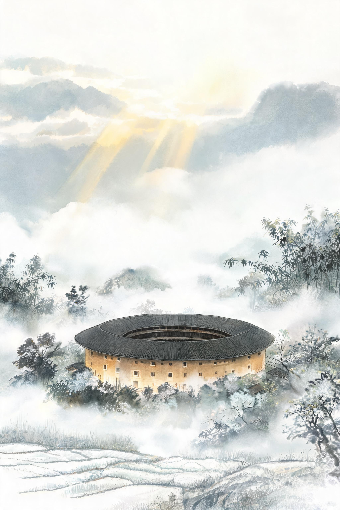
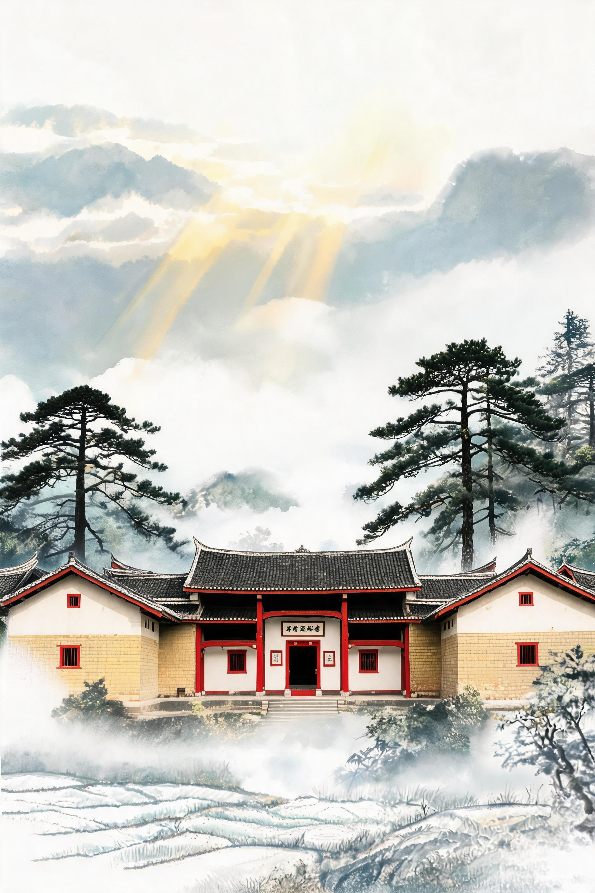

口径：TA 负责生成与组织，审美判断、文化准确性与内容合规由师生负责；成稿可一键入库沉淀为校本素材库。本页素材均为 TA 生成。
① 文生图 · 40秒出四张文旅海报
场景：《文旅短视频创作》课，学生做"家乡文旅IP"作业——传统做法找图配图半天，TA 一句话出四版风格供选。

永定土楼 · 水墨国风晨雾金光插画风海报

古田会址 · 红色文旅红金庄严宣传海报
提示词（第1张）：电影级航拍镜头，福建永定客家土楼群清晨全景，晨雾缭绕山谷，金色阳光穿过云层洒在环形土楼上，远处梯田层叠，写实风格，风景纪录片质感，镜头缓慢推进
—— 同一组教学主题可批量换风格：水墨 / 剪纸 / 赛博 / 手账风，风格件可沉淀为校本预设
演示讲法：先问老师"您带学生做文旅海报要多久"→现场改一句提示词（如换成剪纸风）→ 讲风格预设库与素材入库。
② 文生视频 · 5秒情境导入片
场景：课程开场不再用静态PPT——"课程要讲海丝文化，先来一段扬帆起航"。TA 2分钟出 5 秒 16:9 情境片，直接嵌入课件。
提示词：一艘古老商船扬帆出海，海上丝绸之路，晨光金色海面，电影质感，镜头缓慢推进
分辨率
1344 × 768（16:9）
时长
5 秒 / 段，可多段拼接
生成耗时
约 2 分钟 / 段
推理步数
50 步（画质优先）
风格可控
写实 / 纪录片 / 国风写实
落点
情境导入 / 校园宣传 / 成果片头
1 输入场景 一句话
2 TA 生成 ~2 分钟
3 教师 审看选段
4 入库 校本素材库
演示讲法：现场若在校园网内，可现场跑一段"土楼晨雾航拍"（内网生成通道约2分钟）；讲完接"知识库素材提取"。
③ 知识库素材提取 · 从"一段视频"到"一套教学素材"
场景：知识库不只是存视频——素材入库后自动打标（场景/文化点/知识点），师生检索即取；配合"学生素材提取"需求，作业视频入库即成班级课程素材。
素材入库 图/视频/文档
自动打标 文化点·知识点
检索即取 一句话找素材
组合成课 互动课件引用
📌 与文旅学院建设方案的对应：智算平台"教学用AI智能体"三件套——文生图（海报/IP设计）+ 文生视频（情境片/宣传片）+ 知识库素材提取（学生作业与校本素材沉淀），本页演示三件套的教学闭环。